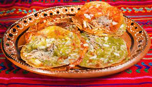

| Café capuchino: El capuchino es una bebida nacida en Italia, preparada con café espresso y leche montada con vapor para darle cremosidad. Un capuchino se compone de 125 ml de leche y 25 ml de café espresso, en ocasiones se agrega cacao en polvo o canela según el gusto del consumidor. | |
|---|---|
| Chalupas: as chalupas son un tipo de antojitos mexicanos originarias del Estado de Puebla e Hidalgo, o de Guerrero que se consume especialmente los fines de semana por las noches o como comida típica durante la celebración de la Independencia de México el 16 de septiembre. |  |
| Empanadas de carne: La empanada de carne es sin duda una receta RE criolla, tan así que en cientos de actos de colegio se repitió la frase '¡empanadas calientes que queman los dientes!’ haciendo alusión a la participación de esta receta en un momento tan importante como el nacimiento de la independencia argentina. |  |